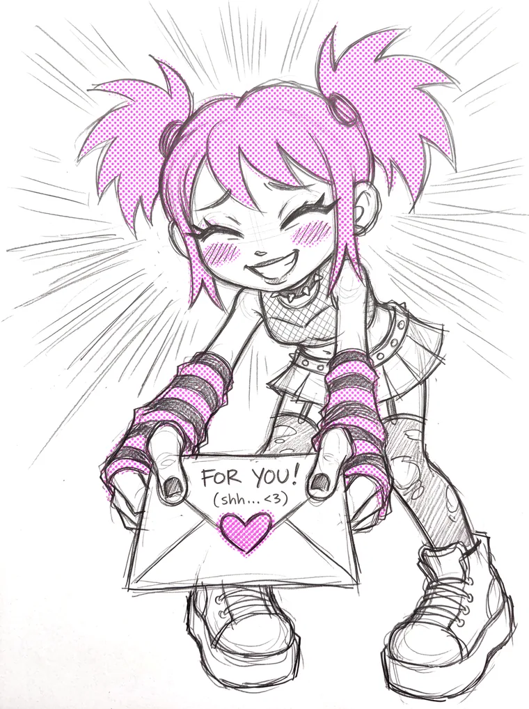

Portrait sittings
San Antonio ● always open
San Antonio ● always open
Photoshoots<3
PHOTOGRAPHS · DO NOT BEND
NO SITTING FEE

Want your picture taken? It's free. I shoot these in rounds whenever I've got a free week. Leave your info and I'll hit you up when the next one comes around. (*ﾉωﾉ)
I'm a filmmaker and I'm building a body of portrait work, so I need people to shoot. I light and grade these like film frames, not snapshots. You get a full color set and a moody black and white set back, usually within a couple of days.
Sittings are free and they stay free. If you ever feel like throwing something in the jar after yours, it lives here. Nobody gets asked, and it changes nothing about your place in line.
deadmanifest